오늘의 과제

박사같은 하루, 같은 표정이다. 빛만 바꿔 볼 거다.

주판봇빛은 밝을수록 좋습니다! 전부 켜겠습니다!

초파리 연구원어디서 오는 빛이냐에 따라 같은 얼굴이 진지해지기도, 무서워지기도 해.

조수 하루저 지금 무서워 보이면 안 되는데요…
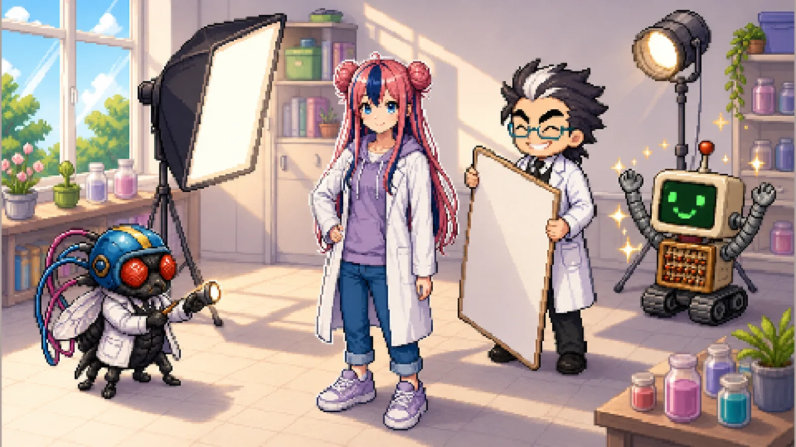
모델은 하루, 빛 두 개를 섞는 단계에는 박사가 손님 모델로 나옵니다. 주판봇은 그림자를 '어두운 색'으로만 칠하고, 초파리는 빛이 어디서 오는지부터 정합니다.
그림 실력·코드·수식을 몰라도 됩니다. 실험을 눌러 보며 따라오세요.
위·왼쪽 위·옆·아래·뒤 — 같은 얼굴도 빛의 방향에 따라 다르게 읽힙니다

학교 수학으로 보면 — 삼각비(cos) — 3부에서 눈 폭을 줄일 때 쓴 바로 그 cos입니다.
| 식 조각 | 뜻 |
|---|---|
| 빛의 세기 | 광원의 밝기(0~1) |
| 사이각 | 면이 향한 방향과 빛이 오는 방향 사이 |
| 0 | 등을 돌린 면은 빛을 못 받는다 |

해 질 녘 옆에서 들어오는 빛은 얼굴 반을 그늘지게 해 쓸쓸해 보이게 합니다. 한낮의 위쪽 빛은 눈 밑에 그늘을 만들어 진지해 보입니다.
3D 렌더링과 사진에서는 키 라이트(주된 빛)의 방향을 먼저 정합니다. 일러스트도 같아서, 작업 시작 전에 '왼쪽 위에서 약하게'처럼 한 줄로 정해 두면 컷마다 그림자가 흔들리지 않습니다.


왼쪽 위의 약한 빛은 얼굴을 자연스럽게 세우는 기본입니다. 바로 위의 강한 빛은 눈 밑에 그늘을 만들어 진지하고 무겁게 보입니다.
바로 옆 빛은 얼굴을 반으로 갈라 갈등과 결심을, 바로 아래 빛은 섬뜩함을, 역광은 의미심장함을 만듭니다.
작업에서는 장면마다 '빛 방향 + 세기'를 한 줄로 정해 두고, 모든 그림자를 그 반대쪽에 둡니다.
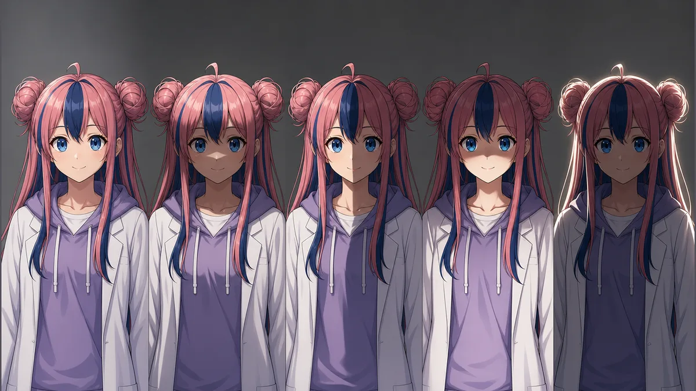
AI에게 '슬픈 하루'를 부탁했더니 아래에서 비춘 듯한 그림자가 생겨 무서워 보였습니다. 어떻게 할까요?
빛을 문장에 넣으세요. 'soft cool light from above'처럼 방향과 세기를 적으면 표정과 빛이 같은 말을 합니다. 빛을 안 적으면 도구가 아무 방향이나 고릅니다.
약한 빛과 강한 빛을 겹치면 밝은 면은 줄어도 존재감이 깊어집니다
창가 자리에서 형광등까지 켜면 얼굴의 그림자가 부드러워지고 중간 톤이 생깁니다.
사진과 3D에서는 주된 빛(키 라이트)에 보조 빛(필 라이트)을 더하는 구성이 기본입니다. 손 그림에서는 그림자를 두 겹으로 나눠 칠해 같은 효과를 냅니다. 태양 하나로는 생길 수 없는 그림자라서, 신비로운 분위기를 낼 때도 씁니다.

빛이 하나면 받는 곳(명)과 못 받는 곳(암) 두 톤입니다. 빛이 둘이 되면 두 빛을 다 받는 곳(명), 하나만 받는 곳(중), 못 받는 곳(암)으로 세 톤이 생깁니다.
밝은 면의 비율은 오히려 줄 수 있지만, 명·중·암이 모두 있어 얼굴이 단단하고 깊어 보입니다.
작업에서는 그림자 레이어를 두 개(넓은 1차 + 좁고 진한 2차)로 나누고, 두 빛의 방향을 따로 적어 둡니다.
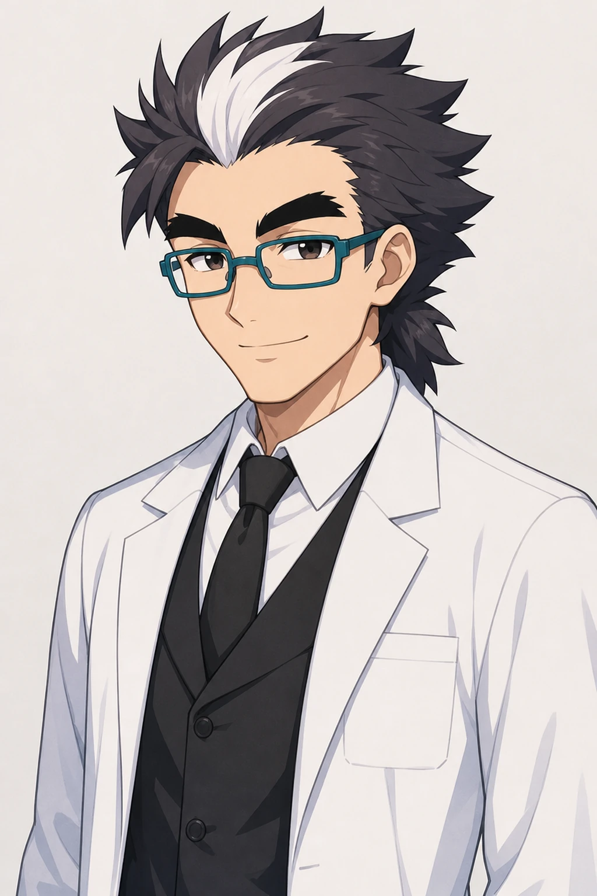
AI 그림이 조명을 여러 개 써서 그림자가 거의 없습니다. 입체감을 살리려면?
주된 빛을 하나 정하고 나머지는 약하게 적습니다. 'key light from above, weak fill light from the upper left, clear mid-tones'처럼 세기의 차이를 말해야 합니다.
뒤에서 오는 빛, 가장자리의 흰 테두리, 바닥에서 튄 반사광
하얀 종이를 무릎에 두고 사진을 찍으면 얼굴 아래가 밝아집니다. 종이가 반사판 노릇을 합니다.
촬영장에서는 반사판(레프판)으로 원하는 곳에만 빛을 되돌려 줍니다. 그림에서는 실제 빛 계산보다 연출을 우선해, 원래 그림자가 될 눈 부분을 하얗게 남기기도 합니다.
역광만 두면 얼굴 대부분이 어둡습니다. 테두리 빛은 윤곽을 살려 인물을 배경에서 떼어 냅니다.
반사판은 아래에서 약한 빛을 더해 표정만 살짝 보이게 합니다. 너무 세면 아래 빛처럼 섬뜩해집니다.
작업에서는 그림자 부분을 한 가지 진하기로 고르게 칠하고, 윤곽을 따라 흰 테두리를 남긴 뒤, 뺨 같은 곳에 작은 빛을 하나 더합니다.
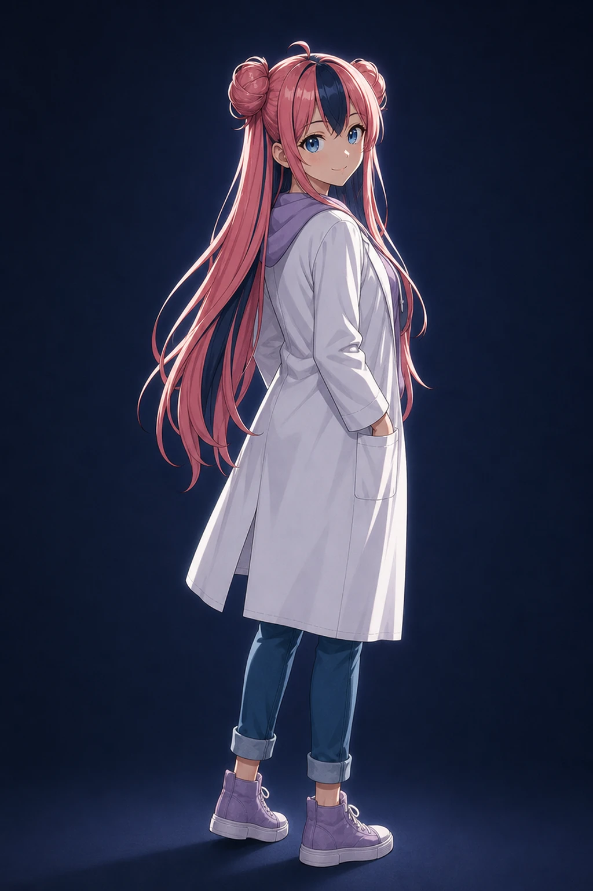
AI에게 'backlit'을 주었더니 얼굴이 새까매져 표정이 안 보입니다. 어떻게 할까요?
'rim light outlining the face, soft bounce light from below revealing her expression'처럼 테두리 빛과 반사광을 함께 적습니다.
빛 계산과 상관없이 기쁨·창백함·위협을 그리는 터치
부끄러우면 볼이 빨개지고, 겁에 질리면 핏기가 가십니다. 터치는 그 색 변화를 선으로 바꾼 약속입니다.
흑백 만화에서는 색을 쓸 수 없어 빗금과 세로선으로 '붉음'과 '창백함'을 표현합니다. 컬러 작업에서도 같은 자리에 같은 감정의 색을 얹습니다. 필요하면 여기에 입체감을 위한 그림자를 따로 더합니다.
喜는 인물 스스로 빛을 내는 상태라 그림자를 줄이고 볼에 붉은 빗금을 더합니다. 怒는 눈 위를 덮는 얼굴 그늘로 위협감을 키웁니다.
哀는 창백함을 뜻하는 세로선을 얼굴 위쪽에 넣고 배경도 어둡게 둡니다. 楽는 터치가 거의 필요 없습니다.
작업에서는 터치를 '감정 레이어'로 따로 두어, 입체감을 위한 그림자 레이어와 섞이지 않게 합니다.
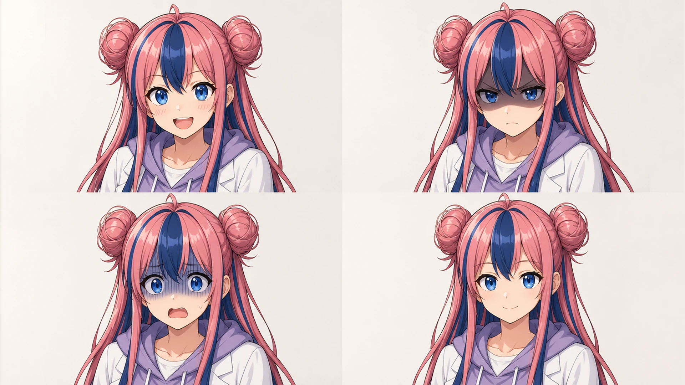
AI에게 'blushing'을 주었더니 볼만이 아니라 얼굴 전체가 빨개졌습니다. 어떻게 고칠까요?
'a light rosy blush only on the cheeks'처럼 자리와 세기를 적습니다. 터치는 작게, 정해진 자리에 써야 약속으로 읽힙니다.
이 부에서 배운 원리를 그림 생성 AI(Genspark 등)로 직접 확인합니다. A는 이 페이지 그림을 실제로 만든 프롬프트, B는 원리를 하나 빼거나 바꾼 비교용 문장입니다.
참고 그림 내려받기: haru_anime_base · sia_anime_base · moa_anime_base · haru_sheet · sia_sheet · moa_sheet · doctor_sheet · fruitfly_sprites_6 · jupanbot_ref_genspark_v0 · pixel_style_ref_prev_cover
같은 표정이 빛의 방향만으로 다르게 읽히는지 봅니다.
첨부: refs/haru_anime_base.png, refs/doctor_sheet.png
Illustration, wide 16:9. Art style: high-quality anime illustration, clean confident lineart, two-tone cel shading, natural adult proportions. Match the attached reference images exactly (face, hair, colors, accessories). All characters are adults in their early twenties (the Professor is an adult man in his thirties, normal proportions, not chibi); modest outfits exactly as described. Five identical head-and-shoulder portraits of Haru (adult lab assistant, long straight pink hair with navy streaks and a thick navy streak down the center of the bangs, two round hair buns on top, small ahoge, big blue eyes), wearing lavender hoodie with white drawstrings over a white t-shirt, open white knee-length lab coat, rolled-up jeans, lavender sneakers with the same calm expression, each lit differently: 1) soft light from the upper left; 2) strong light from directly above with shadows under the eyes; 3) hard light from the side splitting the face in half; 4) strong light from directly below, eerie; 5) backlight from behind with a bright rim on the hair and a dark face. Dark gray studio background so the lighting is clear. Plain off-white studio background or a bright clean lab interior. No text, no letters, no numbers, no speech bubbles, no logos, no watermark, no revealing clothing, not childlike, no school uniform, not resembling any famous anime character.
Same image, same layout. Change only: light all five portraits the same way, with soft light from the upper left. Keep everything else the same.
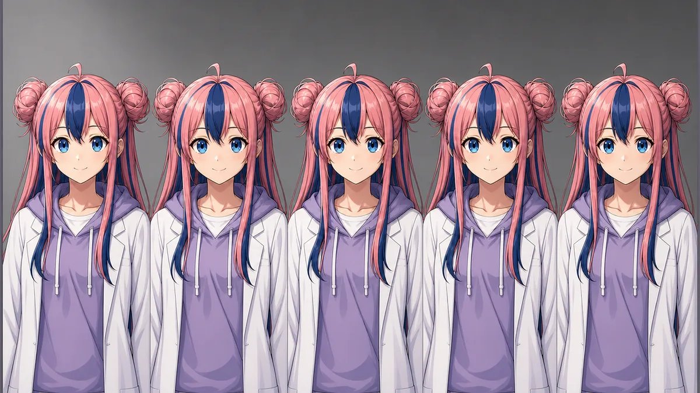
실제 결과: A는 왼쪽 위·바로 위·옆·아래·역광이 뚜렷하게 달라, 넷째는 그늘진 눈이 섬뜩하고 다섯째는 머리 테두리만 밝습니다. B는 다섯 장이 모두 같은 밝기의 얼굴이 되어 분위기 차이가 사라졌습니다.
붉은 빗금·얼굴 그늘·세로선이 감정과 짝을 이루는지 봅니다.
첨부: refs/haru_anime_base.png, refs/doctor_sheet.png
Illustration, wide 16:9. Art style: high-quality anime illustration, clean confident lineart, two-tone cel shading, natural adult proportions. Match the attached reference images exactly (face, hair, colors, accessories). All characters are adults in their early twenties (the Professor is an adult man in his thirties, normal proportions, not chibi); modest outfits exactly as described. Four head-and-shoulder portraits of Haru (adult lab assistant, long straight pink hair with navy streaks and a thick navy streak down the center of the bangs, two round hair buns on top, small ahoge, big blue eyes), wearing lavender hoodie with white drawstrings over a white t-shirt, open white knee-length lab coat, rolled-up jeans, lavender sneakers in manga-style shading: 1) joyful with short red diagonal hatch lines on the cheeks; 2) angry with a dark shadow covering the upper face and eyes; 3) shocked and sad with thin blue vertical lines over the upper face; 4) relaxed and content with no extra marks. Light from the upper left. Plain off-white studio background or a bright clean lab interior. No text, no letters, no numbers, no speech bubbles, no logos, no watermark, no revealing clothing, not childlike, no school uniform, not resembling any famous anime character.
Same image. Change only: put the blue vertical lines on the joyful face and the red cheek hatching on the sad face. Keep the expressions the same.
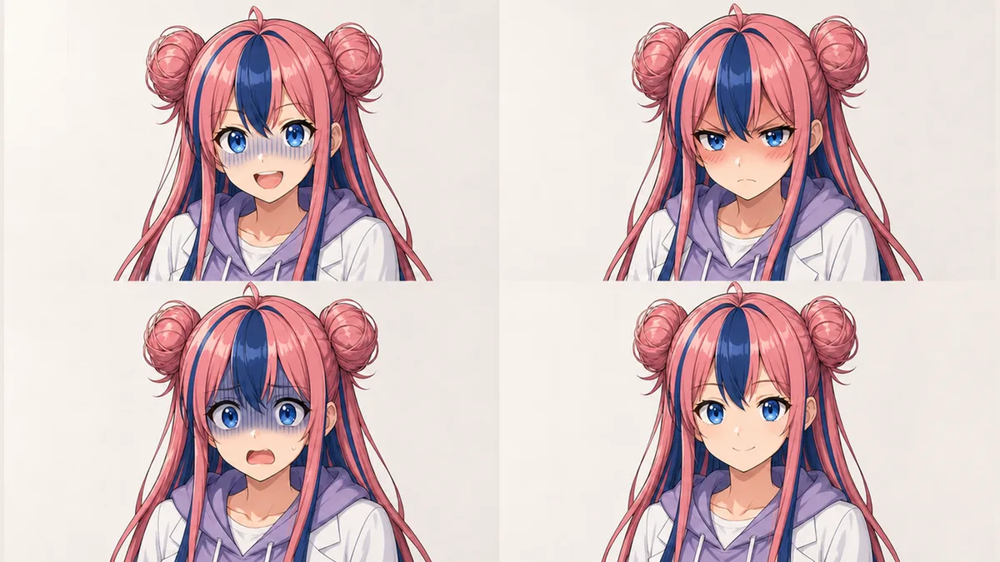
실제 결과: A는 기쁨(볼 홍조)·분노(눈 위 그늘)·슬픔(파란 세로선)·편안(터치 없음)으로 나왔습니다. 다만 기쁨의 붉은 빗금은 빗금보다 둥근 홍조에 가깝습니다. B에서는 기쁜 얼굴에 세로선이 들어가 웃는데 질린 얼굴이 되었고, 화난 얼굴에 붉은 홍조가 생겼습니다. 슬픈 얼굴은 세로선이 그대로 남았습니다.
'직접 만들어 보기'가 이미 만든 프롬프트를 비교하는 실습이라면, 연습 과제는 여러분이 직접 문장을 쓰고 이어 붙이는 연습입니다. 단계를 차례로 따라 하고, 마지막에 예상 결과 그림과 견주어 확인표로 점검하세요.
참고 그림 내려받기: haru_anime_base · sia_anime_base · moa_anime_base · haru_sheet · sia_sheet · moa_sheet · doctor_sheet · fruitfly_sprites_6 · jupanbot_ref_genspark_v0 · pixel_style_ref_prev_cover
난이도 중급 · 걸리는 시간 약 20분 · 원리: 3단계 역광과 테두리 빛 · 1단계 빛의 방향
하루가 조용히 "그래서, 어떻게 할 거야?"라고 묻는 반전 장면을 역광·테두리 빛·반사광으로 만듭니다. 얼굴은 어둡되 표정은 보이게 하는 연습입니다.
첨부: refs/haru_anime_base.png, refs/haru_sheet.png
빛을 세 조각(주된 빛·테두리·반사광)으로 나눠 적습니다.
Head-and-shoulders of Haru from the attached reference, looking over her shoulder at the viewer with a quiet, knowing smile. Lighting: strong backlight from behind; the face evenly in soft shadow; a bright white rim light outlining her profile, hair buns and shoulders; a faint bounce light from below so her expression is still readable. Dark navy background. Match the attached reference exactly (face, hair, colors, accessories). An adult woman in her early twenties, adult proportions. No text, no logos.
얼굴이 너무 까맣다면 반사광만 올립니다.
Same image. Change only: slightly stronger soft bounce light from below on her face. Keep the backlight and rim light.
얼굴 전체가 한 가지 진하기의 그늘이고, 윤곽선만 하얗게 빛나며, 미소는 아래에서 튄 약한 빛으로 겨우 보여야 합니다. 의미심장한 분위기가 목표입니다.
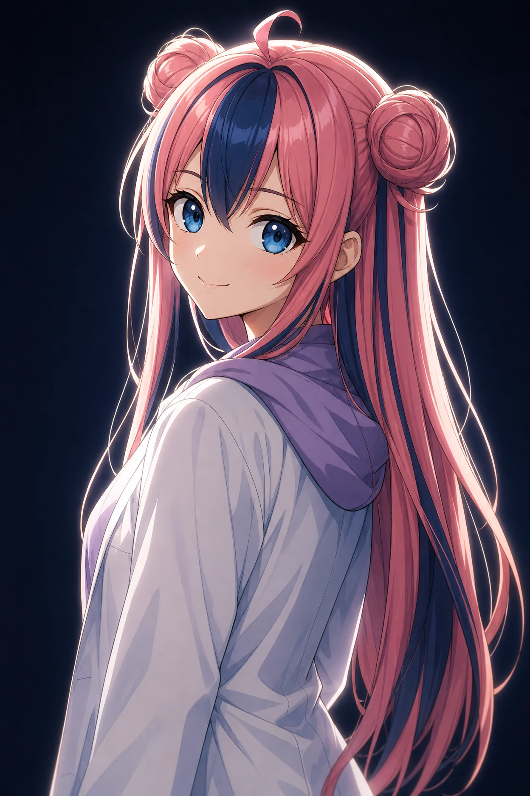
1차 결과: 남색 배경에 머리카락과 어깨 윤곽의 테두리 빛은 잘 나왔지만, 얼굴은 그늘지지 않고 앞에서 밝게 비춰졌습니다. 그래서 의미심장함보다 부드러운 분위기입니다. 'the face in shadow, no front light'를 덧붙여 다시 만들어 보세요.
앞 결과에서 약했던 점: 테두리 빛은 있었지만 얼굴이 앞에서 밝게 비춰졌음 · 첨부: refs/haru_anime_base.png, refs/haru_sheet.png
Illustration, vertical 2:3. Art style: high-quality anime illustration, clean confident lineart, two-tone cel shading, natural adult proportions. Match the attached reference images exactly (face, hair, colors, accessories). All characters are adults in their early twenties (the Professor is an adult man in his thirties, normal proportions, not chibi); modest outfits exactly as described. Head-and-shoulders of Haru (adult lab assistant, long straight pink hair with navy streaks and a thick navy streak down the center of the bangs, two round hair buns on top, small ahoge, big blue eyes), wearing lavender hoodie with white drawstrings over a white t-shirt, open white knee-length lab coat, rolled-up jeans, lavender sneakers, looking back over her shoulder at the viewer with a quiet, knowing smile. Lighting: ONLY a strong backlight from directly behind her. NO front light, NO key light on the face. Her whole face and front are in deep, even shadow (dark but not pure black); a thin bright white rim light outlines her profile, hair buns, hair strands and shoulders. A very faint, cool bounce light from below lets the smile and the blue eyes be barely visible. Dark navy background with a soft glow behind her head. Mysterious, meaningful mood. No text, no letters, no numbers, no speech bubbles, no logos, no watermark, no revealing clothing, not childlike, no school uniform, not resembling any famous anime character.
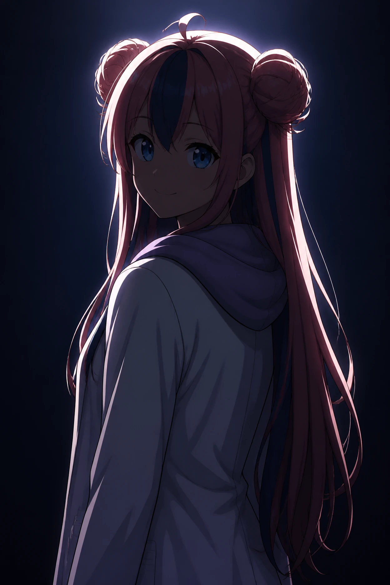
2차 결과(성공): 앞쪽 빛을 막자(ONLY a strong backlight, NO front light) 얼굴 전체가 고르게 그늘지고, 머리카락·번·어깨 윤곽에만 흰 테두리 빛이 남았습니다. 반사광으로 눈과 미소가 겨우 보여 의미심장한 분위기가 됐습니다.
난이도 기초 · 걸리는 시간 약 15분 · 원리: 1단계 빛의 방향
같은 박사 초상에서 빛의 방향만 바꿔, 따뜻한 장면과 섬뜩한 장면을 만듭니다. 표정은 그대로 둡니다.
첨부: refs/doctor_sheet.png
기준: 왼쪽 위의 부드러운 빛.
Upper body portrait of the Professor from the attached reference (adult man), calm slight smile, soft warm light from the upper left. Neutral gray background. No text.
같은 대화에 이어 붙여 빛만 아래로 옮깁니다.
Same image. Change only: remove the upper-left light and light him with a strong light from directly below his chin. Keep the same expression and framing.
표정은 같은데 왼쪽은 믿음직하고, 오른쪽은 괴담을 들려주는 사람처럼 보여야 합니다. 바뀐 것은 빛의 방향 하나입니다.
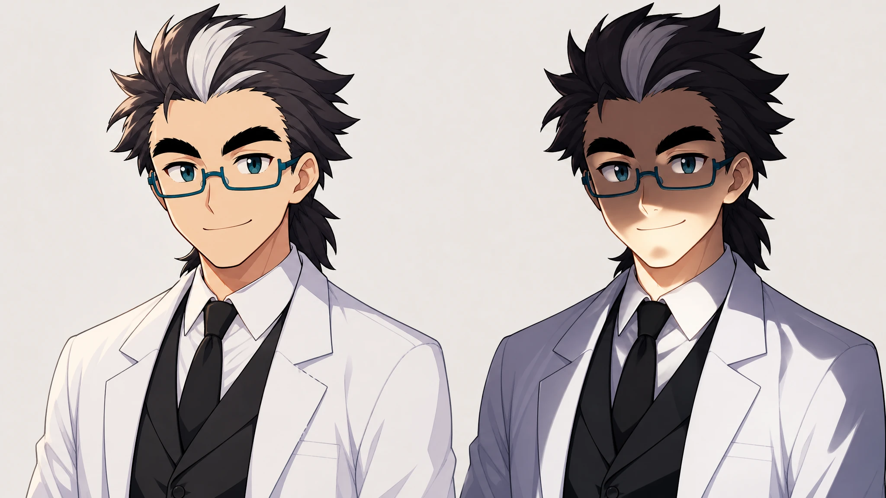
1차 결과: 같은 미소의 박사 두 장 중 오른쪽은 얼굴 위쪽이 어둡고 턱 쪽이 밝아져 분위기가 확 달라졌습니다. 다만 아래 빛의 위로 뻗는 그림자는 약해, 섬뜩함보다는 '수상함' 정도입니다.
앞 결과에서 약했던 점: 아래 빛의 위로 뻗는 그림자가 약해 섬뜩함이 부족했음 · 첨부: refs/doctor_sheet.png
Illustration, wide 16:9. Art style: high-quality anime illustration, clean confident lineart, two-tone cel shading, natural adult proportions. Match the attached reference images exactly (face, hair, colors, accessories). All characters are adults in their early twenties (the Professor is an adult man in his thirties, normal proportions, not chibi); modest outfits exactly as described. Two upper-body portraits of the Professor (adult male scientist, dark charcoal spiky hair with a white streak at the front, very thick black eyebrows, teal rectangular glasses), wearing white lab coat over a black vest, white shirt and black tie side by side, EXACTLY the same calm slight smile and pose. LEFT: soft warm light from the upper left, shadows fall down and to the right, friendly and reliable. RIGHT: the ONLY light is a strong flashlight held directly below his chin (do not draw the flashlight). Bright underside of the chin, nostrils and cheekbones; dark shadows cast UPWARD over the nose, eyes, eyebrows and forehead; glasses catching light from below; the top of the head falls into darkness. Eerie ghost-story mood. Neutral gray background, darker on the right half. No text, no letters, no numbers, no speech bubbles, no logos, no watermark, no revealing clothing, not childlike, no school uniform, not resembling any famous anime character.
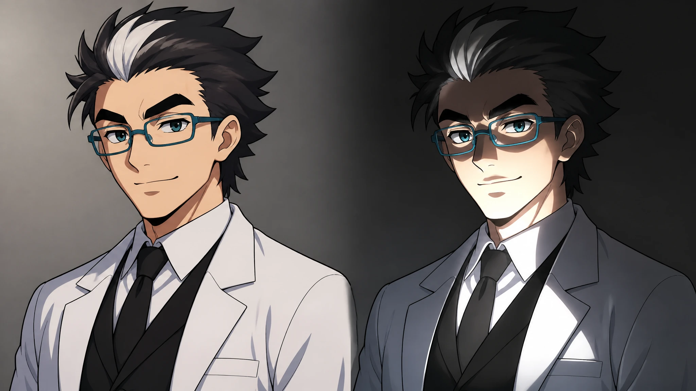
2차 결과(일부 성공): 빛을 턱 아래 손전등 하나로 정하고 그림자가 위로 뻗게 적자, 오른쪽 박사는 1차보다 확실히 섬뜩해졌습니다. 하지만 배경이 통째로 어두워져 왼쪽의 따뜻함이 줄었습니다.
앞 결과에서 약했던 점: 2차에서 배경까지 어두워져 왼쪽의 따뜻함이 줄었음 → 두 판의 배경을 따로 정함 · 첨부: refs/doctor_sheet.png
Illustration, wide 16:9. Art style: high-quality anime illustration, clean confident lineart, two-tone cel shading, natural adult proportions. Match the attached reference images exactly (face, hair, colors, accessories). All characters are adults in their early twenties (the Professor is an adult man in his thirties, normal proportions, not chibi); modest outfits exactly as described. Two SEPARATE panels side by side with a thin white gap, the same upper-body portrait of the Professor (adult male scientist, dark charcoal spiky hair with a white streak at the front, very thick black eyebrows, teal rectangular glasses), wearing white lab coat over a black vest, white shirt and black tie, EXACTLY the same calm slight smile and pose. LEFT PANEL: warm cream background, bright and cheerful; soft warm light from the upper left; gentle shadows fall down and to the right. RIGHT PANEL: dark charcoal background; the ONLY light is a strong flashlight directly below his chin (do not draw the flashlight); bright underside of the chin, nostrils and cheekbones; dark shadows cast UPWARD over the nose, eyes and forehead; the top of his head fades into darkness. Eerie ghost-story mood. The left panel must stay bright and warm. No text, no letters, no numbers, no speech bubbles, no logos, no watermark, no revealing clothing, not childlike, no school uniform, not resembling any famous anime character.
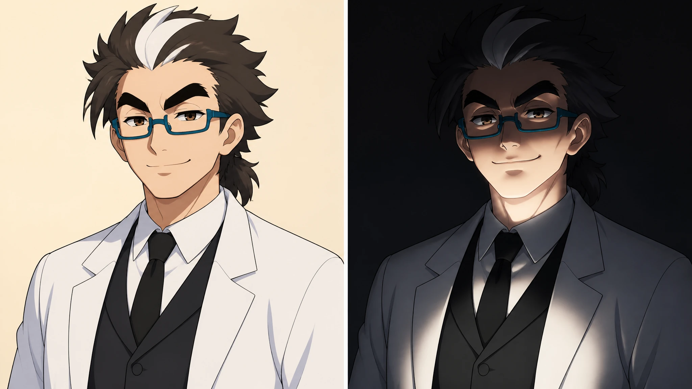
3차 결과(성공): 두 판을 나누고 배경을 따로 정하자(왼쪽 밝은 크림색, 오른쪽 짙은 회색), 왼쪽은 따뜻하고 오른쪽은 아래 빛에 이마가 어둠에 잠긴 섬뜩한 얼굴로 확실히 갈렸습니다. 표정은 두 판이 같습니다.
| 항목 | 주판봇 | 초파리 |
|---|---|---|
| 닮음 | 8 | 8 |
| 원리 | 3 | 9 |
| 자연스러움 | 4 | 8 |
| 합계 | 15 | 25 |


점수는 이야기 속 예시입니다. 실제 그림을 평가한 값이 아닙니다.
| 주제 | 한 줄 | 작업에서는 |
|---|---|---|
| 빛의 방향 | 밝기 = 세기 × cos(사이각) | 장면마다 '방향 + 세기'를 한 줄로 정한다 |
| 빛 둘 | 명·중·암 세 톤이 생긴다 | 그림자 레이어를 두 겹으로 나눈다 |
| 역광 | 얼굴은 어둡게, 테두리는 하얗게, 반사광으로 표정 | 의미심장한 장면에 쓴다 |
| 기분 터치 | 喜 붉은 빗금, 哀 세로선, 怒 얼굴 그늘 | 입체 그림자와 레이어를 나눈다 |
이 페이지에 나온 개념·방법·비유·쓰임을 모았습니다. 검색하고, "설명 보러 가기"로 본문에 돌아갑니다.
지식 색인을 출처와 함께 파일로 내려받습니다. 서지 관리는 BibTeX·RIS, 온톨로지 편집은 Turtle, 그래프 도구는 CSV, 여러 페이지 합치기는 kg.json입니다.